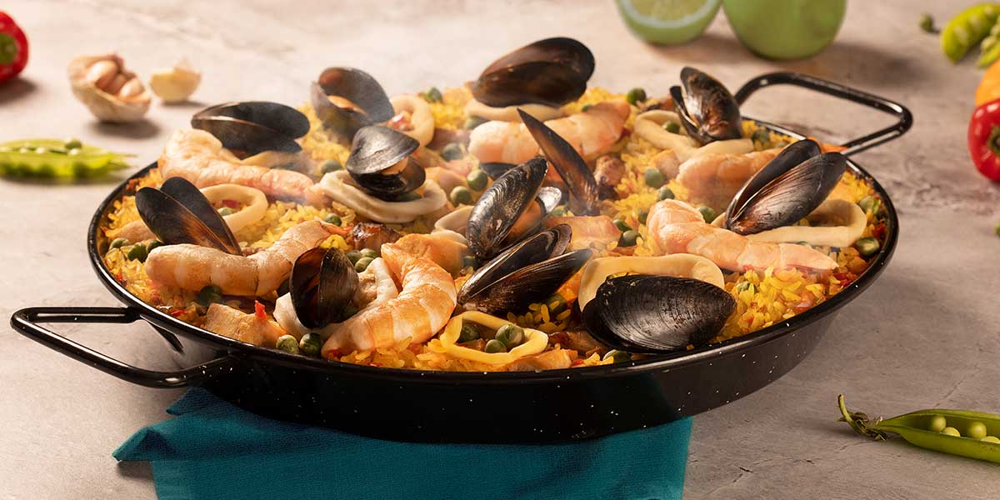

Ingredientes
- 500g de arroz de paella
- 1 pollo desmechado
- 200g de arvejas
- 1 pimiento rojo
- 1 tomate maduro
- 100g de garrofó (judión)
- 3 dientes de ajo
- 1 litro de caldo de pollo a preferencia
- Azafrán al gusto
- Sal y pimienta al gusto
- Aceite de oliva
Proceso
- Calienta un poco de aceite de oliva en una paellera o sartén grande.
- Doramos el pollo desmechado hasta que esté bien cocido.
- Añadimos las arvejas y el pimiento rojo cortados en trozos.
- Incorporamos el tomate rallado y dejamos que se evapore el agua.
- Agregamos el arroz y removemos para que se impregne con los sabores.
- Vertemos el caldo caliente y añadimos el garrofó, el azafrán, la sal y la pimienta.
- Dejamos cocinar a fuego medio durante unos 20-25 minutos, sin remover.
- Cuando el arroz esté cocido y el líquido se haya evaporado, retiramos del fuego.
- Dejamos reposar unos minutos antes de servir.
Imagen de la Paella

Paella lista para degustar.